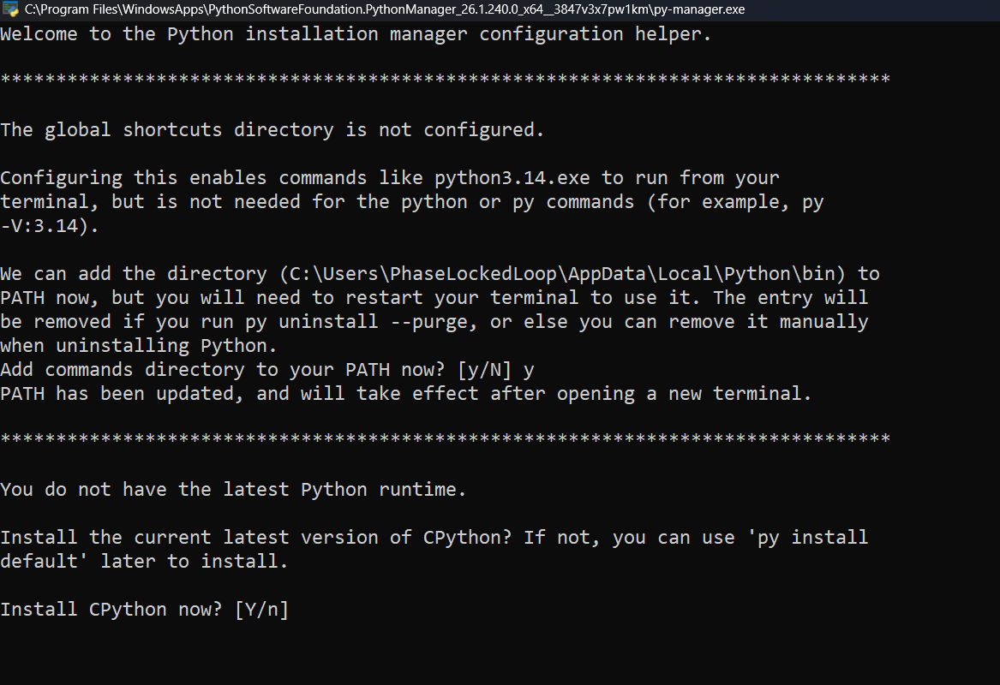
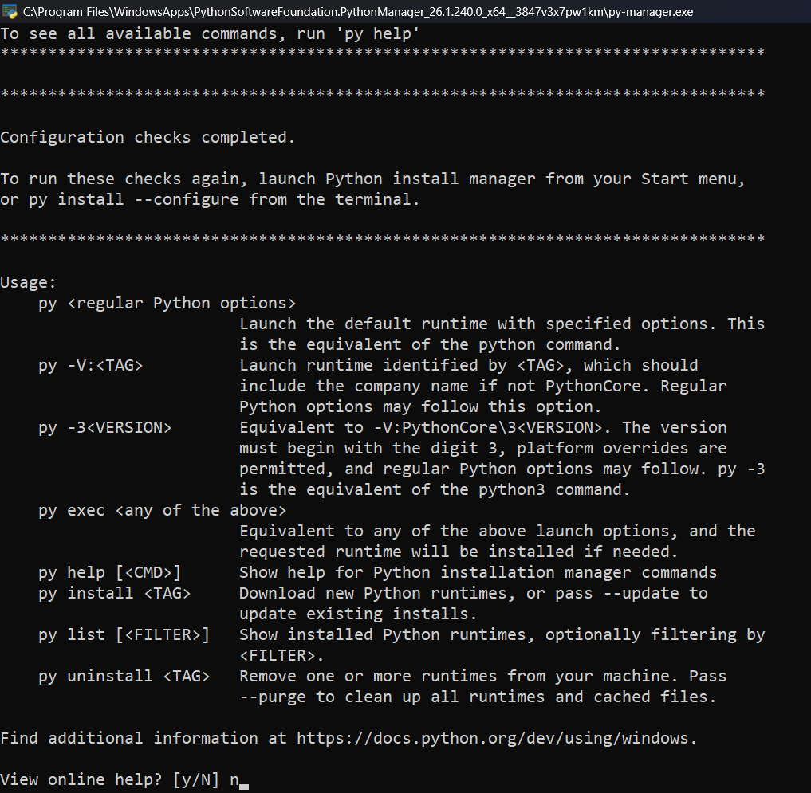

Vittascience – Variables Python
Version améliorée : boutons fonctionnels, chronomètre, sauvegarde automatique, correction, export, vidéo intégrée, iframe Vittascience, images commentées et guide Python/PyCharm.
Durée : 55 minBarème : 60 pointsResponsive tabletteSauvegarde locale
Avant de commencer
Les réponses sont sauvegardées automatiquement dans ce navigateur. Le chronomètre est indicatif.
Sauvegarde : en attente du démarrage.
Mode enseignant
Code par défaut : GJEP.
Ressource vidéo
🎯 Regarde la vidéo puis reproduis les étapes dans Vittascience.
Afficher la vidéo intégrée
Vidéo intégrée sans quitter la page.
Interface Vittascience Python
Les élèves peuvent programmer directement ci-dessous ou ouvrir Vittascience dans un nouvel onglet.
Ouvrir directement Vittascience
Interface intégrée Vittascience
Si l’iframe est bloquée par le navigateur, la tablette ou le réseau, utiliser le bouton d’ouverture dans un nouvel onglet.
Installer Python et les outils nécessaires
Objectif : installer Python 64 bits proprement, puis configurer PyCharm et les bibliothèques.
1. Vérifier Windows 64 bits
wmic os get osarchitecture [Environment]::Is64BitProcess
2. Captures Python Install Manager
Figure 1 : télécharger Python depuis le site officiel.

Figure 2 : accepter l’installation depuis python.org.

Figure 3 : répondre y pour ajouter les commandes Python au PATH.

Figure 4 : répondre y pour installer CPython si nécessaire.

Figure 5 : configuration terminée.
3. Méthode PowerShell directe
cd "$env:USERPROFILE\Downloads" Invoke-WebRequest -Uri "https://www.python.org/ftp/python/3.12.0/python-3.12.0-amd64.exe" -OutFile "python312.exe" Start-Process .\python312.exe
4. Vérifier Python
python --version
python -c "import struct, sys; print(sys.version); print(struct.calcsize('P')*8)"5. Installer les bibliothèques
python -m pip install matplotlib python -m pip install pygame --only-binary :all: python -m pygame.examples.aliens
6. Configurer PyCharm
Dans PyCharm, ouvrir les paramètres avec Ctrl + Alt + S, puis aller dans Project → Python Interpreter. Choisir l’interpréteur Python 64 bits installé.